项目概况 overview
为企业网上银行客户，提供更安全贴心数字银行服务，全面提升业务效率。实现已有电脑端与新增移动端产品的功能同步，并且为大量后台数据呈现和操作进行移动端的展示优化。主要功能包括账户查询、预约管理、待办交易、网银交易等。
本次的设计挑战在于：1.设计侧如何发力，让用户感受到app的安全性；2.登录流程上，因银行企业对很大的很大的安全需求，重新设计时一定要理清“流动保安编码”的性质，以及不同的登录方式的逻辑关系；
需求整合 Requirement Organize
根据提供的新功能的需求文档，与web端的现有功能进行整合。
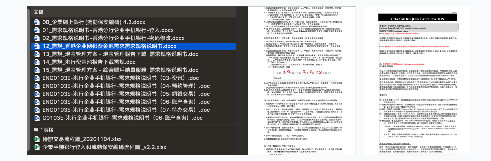 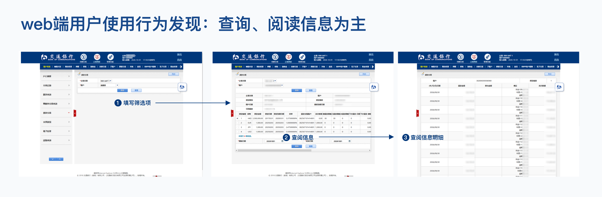竞品分析 Competitive product analysis
考虑到香港地区与内地界面产品的使用习惯、审美偏好存在差异，因此挑选香港地区排名靠前的银行产品作为竞品，对标分析其界面设计中的优劣之处，以提供借鉴。
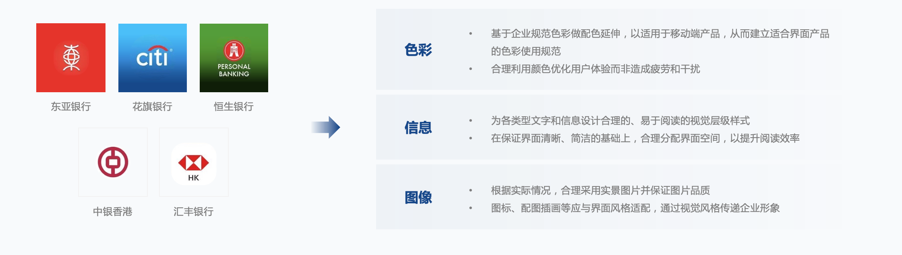设计推导 Design goals
安全所有设计原则的基底，也是产品业务多次强调的诉求。那么，怎么通过设计体现安全性呢？我们也像业务了解过哪一方面是用户反馈缺乏安心感。设计从「交互层」和「视觉层」两方面着重加强用户对安全的感知。产品由电脑端向移动端扩展，在进行两端功能、操作适配的过程中，交互层面针对大量的数据进行了信息分层处理
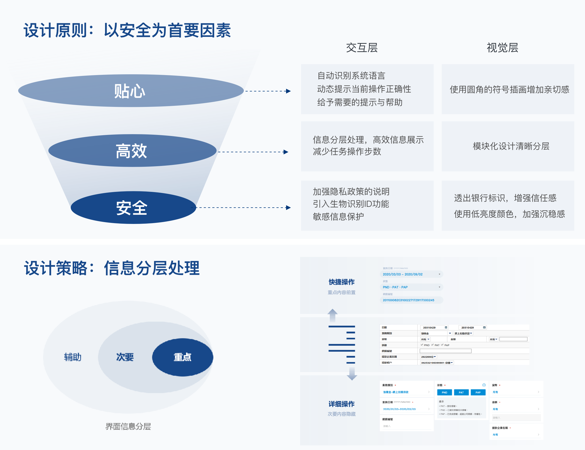 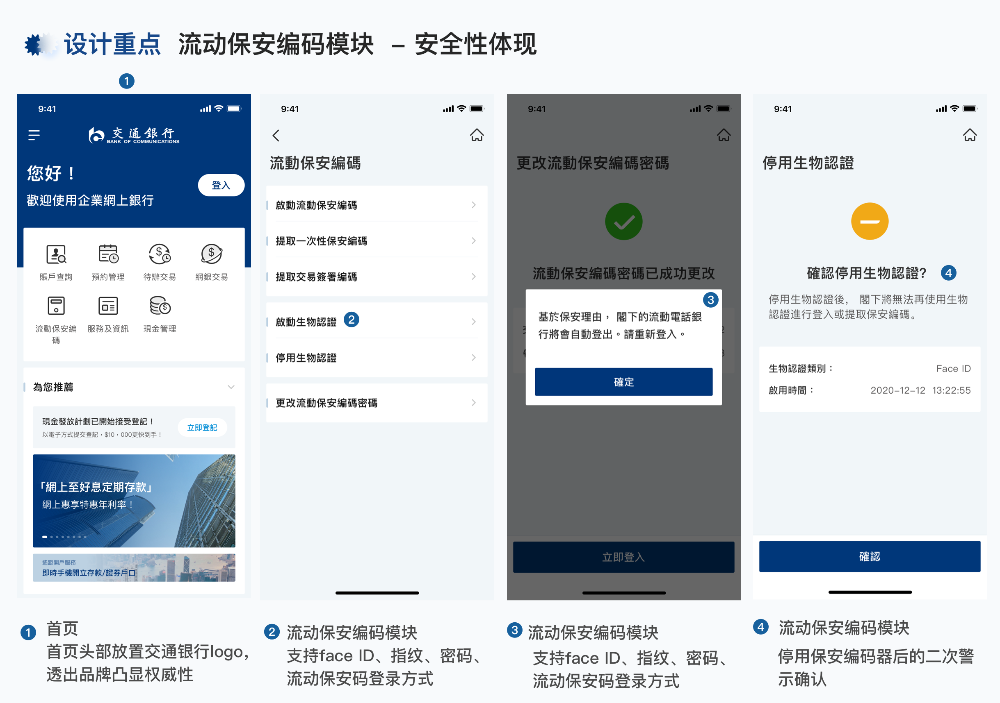 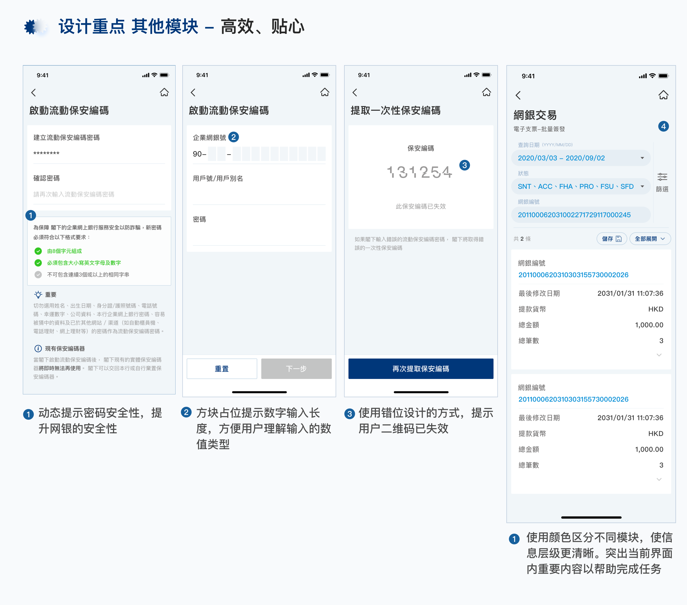信息架构设计 Information Construction Design
和业务一起确定App信息架构后。划分流程优先级，核心流程展示概念交互设计方案，随后延展至其他分支流程。
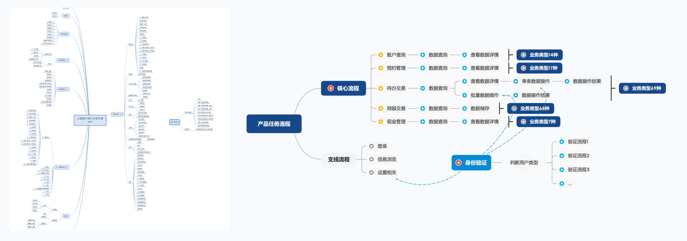交互设计 Wireframes
和业务一起确定App信息架构后，划分流程优先级，核心流程展示概念交互设计方案，随后延展至其他分支流程。
登陆流程业务梳理 User Flow
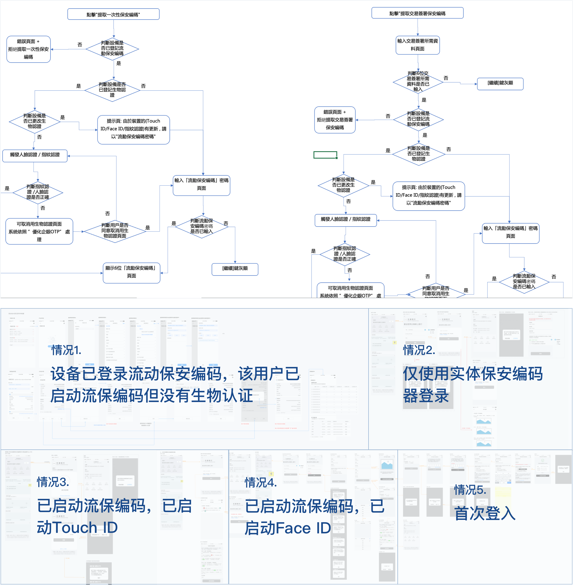网银模块 wireframes page
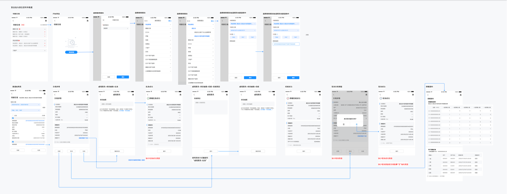视觉设计 Hi-Fi Design
设计风格匹配交行简约的企业形象，为信息划分清晰的视觉层级，提升信息的可读性，帮助用户高效阅读和处理信息；使用清晰的元素，整齐的排版来减低视觉负担。
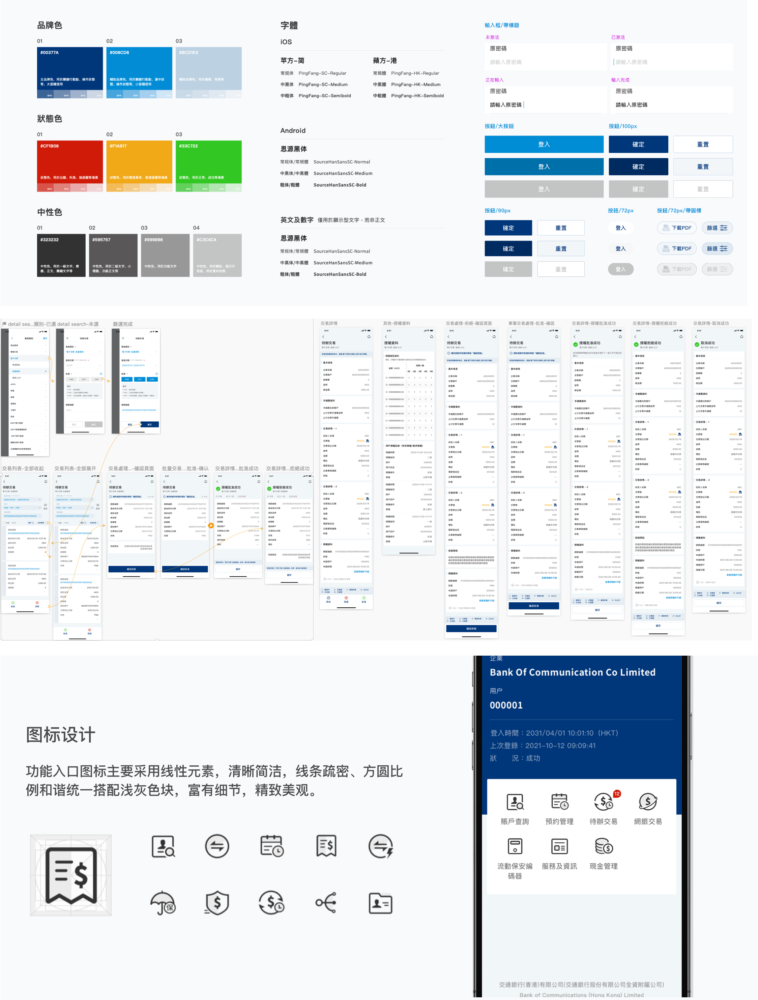多语言适配 HiFi Design
交通银行企业银行的使用范围在香港地区，有较大的英语适配需求，故在完成中文界面后，对典型页面进行英语排版适配，然后再延展到其他一般页面。
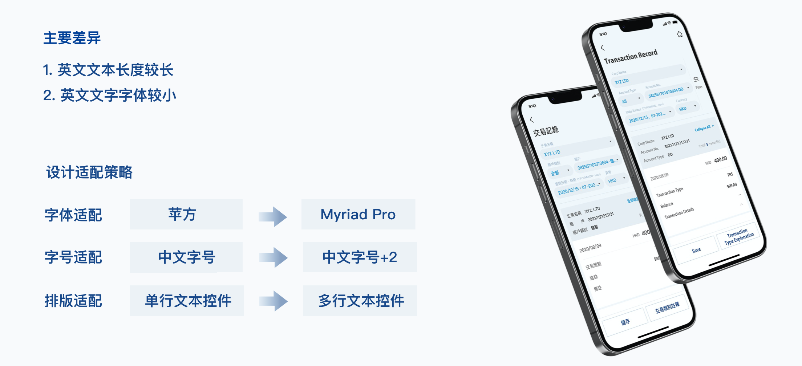设计追踪 Design Result
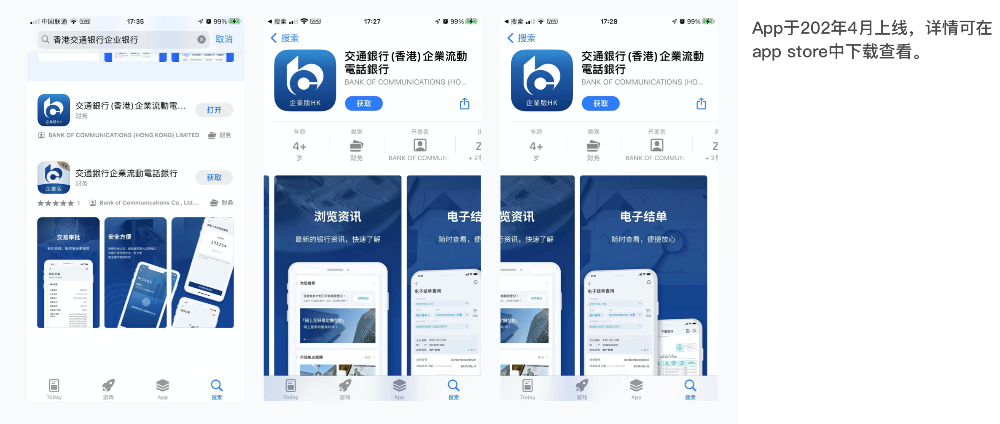
返回顶部